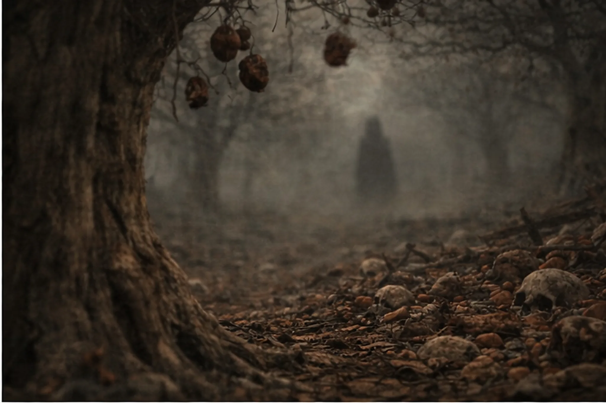
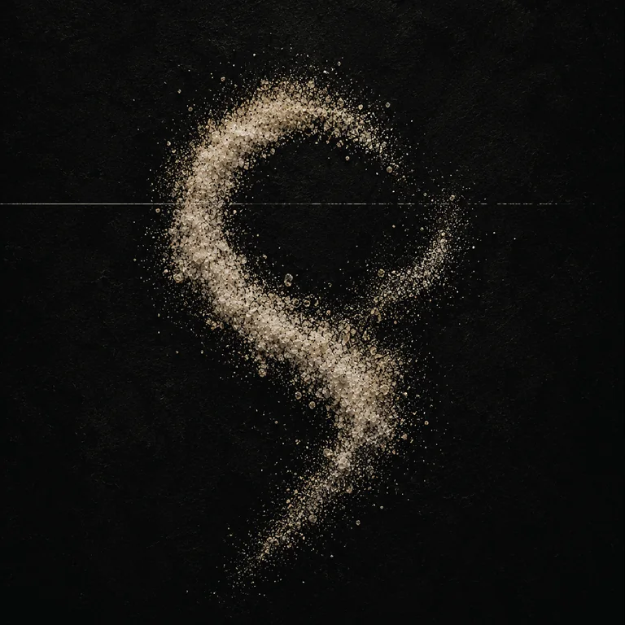
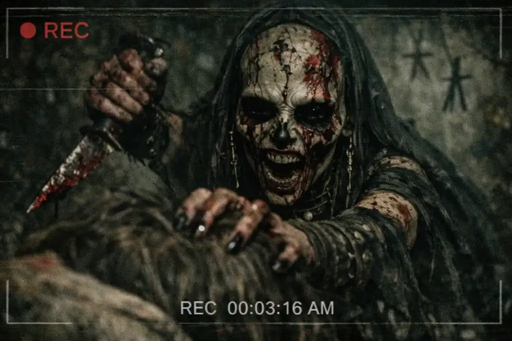
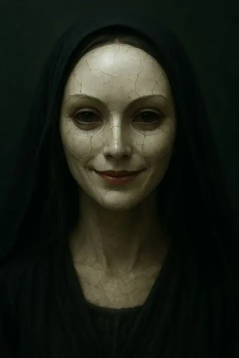
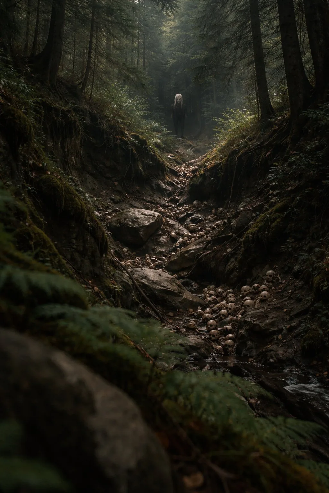
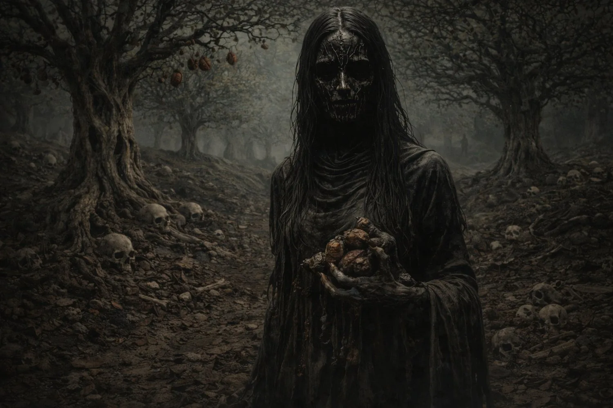
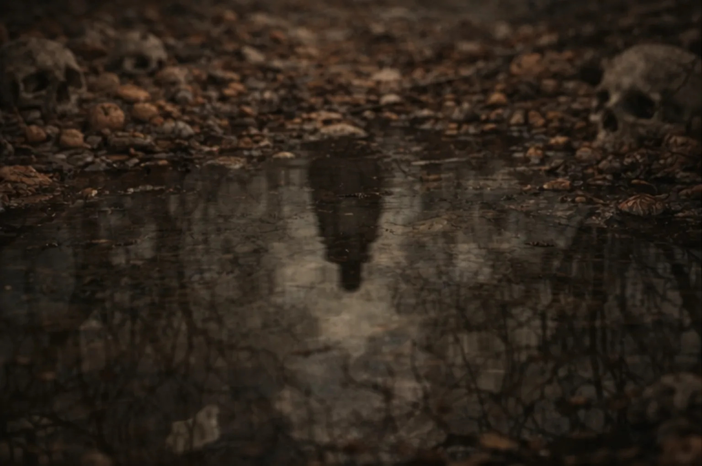

For fans of
RIYL
If these names light up the room, Salt is the doorway before the Orchard opens wider.

Ghost Orgy is a Phoenix-based experimental post-hardcore project by Jack Dyer. Art-damaged hardcore and die-fi ritual audio built as a horror-mythic canon: Nine Sisters, one Orchard, and no clean exit.
Experimental post-hardcore for the art-damaged hardcore listener. Step through the first doors: listen, press, licensing, lore, shop, or updates.
Start with Salt and The Sky That Fears Us.
Facts, RIYL, bios, assets, coverage angles, and contact.
Select licensing, commissions, and collaborations for projects that can carry the work.
Limbo, Lust, Gluttony, Greed, Wrath, Heresy, Violence, Fraud, and Treachery.
Salt-adjacent garments, sigils, sister marks, and orchard fragments.
Request release notes, press notes, product drops, and future field notices.
The shortest version: experimental post-hardcore for the art-damaged hardcore listener. Salt opens the door.
If these names light up the room, Salt is the doorway before the Orchard opens wider.
Best first click for editors, friends, playlist notes, and anyone asking where to start.
Release updates, press notes, and future field notices without depending on a social feed.
Two albums. Two wounds. One signal the Orchard let through.

The preservation wound. Start with The Sky That Fears Us, then follow the album into the Orchard.
The endurance wound. What the body does once the signal will not leave the room.
Not explanations. Pressure marks. Sentences that keep surfacing in files written by people who should not share language.




Nine bodies grown around nine failures of the self. They are not mascots or lore cards. They are the Orchard's preferred ways of entering a room.
The hallway arrives after the footsteps. The mirror refuses to end where the wall says it should.
Wanting so total it eats the name of the one doing the wanting.
Not hunger for food. Hunger for significance. A mouth opening under meaning itself.
Every object weighed against the soul nearest to it. Only the hunger appreciates.
Fire that chooses flesh without asking the room for permission.
Faith forgets its own words in her presence. Prayer becomes fuel instead of defense.
The body copies the room. The room copies the wound. Both insist they were first.
A face learned too well. A voice held one beat too long after the owner is gone.
Love reads as threat. Mercy reads as permission. Meaning turns its knife inward.

Salt comes first. The artifacts that follow are physical traces of the record: objects, marks, and fragments pulled from the same world.